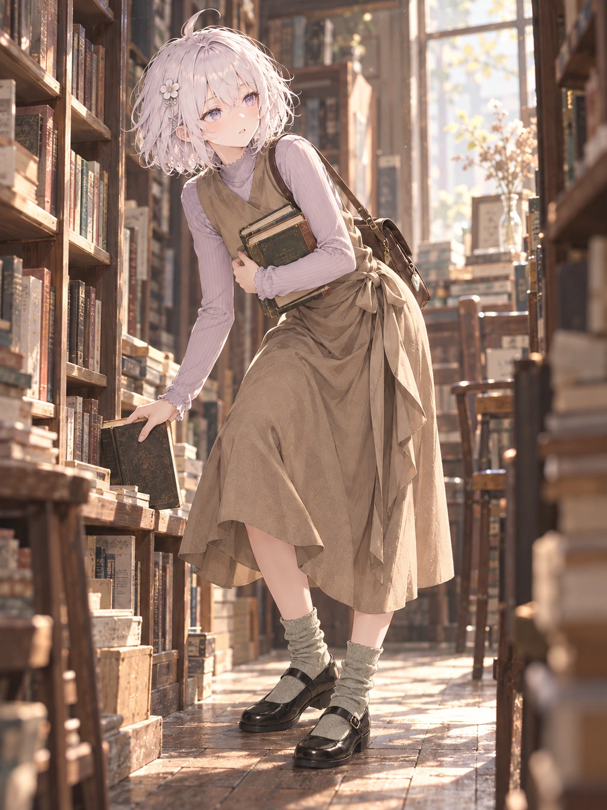

其他制作记录 / 逐页阅读
T08 · 午后旧书店的裹身裙
已检查 · 旧书店外出场景可审阅

检查与反馈记录
- 这里明确是T08外出旧书店，不混作居家；棕色裹身裙、淡紫内搭与袜鞋符合参考，角尾隐藏。
- 一手取书、一手抱书，双臂不重复，两只鞋与两条小腿相接；裙挡住髋膝部分，不能宣称全骨架可见。
- 身体侧前倾和头姿共同变化，颈部承接自然；不是中立站姿。
- 书脊只作背景纹理，肩袋及叠书有支撑，未见悬浮配件。
其他制作记录 / 逐页阅读
已检查 · 旧书店外出场景可审阅
